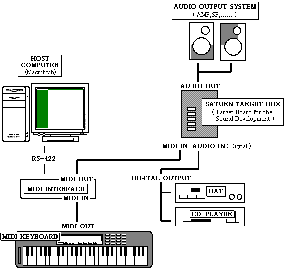

★SOUND Manual
★サウンド開発マニュアル
★SOUND Manual
★サウンド開発マニュアル
名称 | 機種 | 内容 |
開発ホストマシン | Macintosh | MacintoshⅡシリーズ以上 SCSI搭載機種 |
サターンターゲットボックス | サウンドボード単体（メインボードなし）でも動作可能 | |
MIDI楽器 | MIDIキーボード | MIDI出力が可能な機種 |
オーディオ機器 | CDプレーヤー | ＊デジタル出力が可能な機種 波形編集、HDレコーディングに使用 |
MIDIインターフェース | Studio5 | Macintosh用MIDIインターフェース |
システム | ソフトウェア | 提供先 | 内容 |
音色開発ツール | 波形エディタ | SEGA | 波形編集、HDレコーディング |
作曲ツール | MIDIシーケンサ | 市販品 | Digital Performer（Mark of the Unicorn社） |
サウンド開発 | マスターシステム | SEGA | マップツール |
以下のツールはサウンドドライバ等のプログラムを作成・変更するためのもので、サウンド(曲、効果音)データの開発には必要ありません。
システム | ソフトウェア | 提供先 | 内容 |
プログラム開発 | テキストエディタ | SEGA | プログラム作成、データ作成等 |

★SOUND Manual
★サウンド開発マニュアル